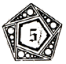

|
-3-
The PODGE of the Sacred Chao is symbolized as The Golden Apple of Discordia, which represents the Eristic Principle of Disorder. The writing on it, "KALLISTI" is Greek for "TO THE PRETTIEST ONE" and refers to an old myth about The Goddess. But the Greeks had only a limited understanding of Disorder, and thought it to be a negative principle.
The Pentagon represents the Aneristic Principle of Order and symbolizes the HODGE. The Pentagon has several references; for one, it can be taken to represent geometry, one of the earliest studies of formal order to reach elaborate development;* for another, it specifically accords with THE LAW OF FIVES.
THE TRUTH IS FIVE BUT MEN HAVE ONLY ONE NAME FOR IT.
-Patamunzo Lingananda
It is also the shape of the United States Military Headquarters, the Pentagon Building, a most pregnant manifestation of straightjacket order resting on a firm foundation of chaos and constantly erupting into dazzling disorder; and this building is one of our more cherished Erisian Shrines. Also it so happens that in times of medieval magic, the pentagon was the generic symbol for werewolves, but this reference is not particularly intended and it should be noted that the Erisian Movement does not discriminate against werewolves-- our membership roster is open to persons of all races, national origins and hobbies.
_______________________
* The Greek geometrician PYTHAGORAS, however, was not a typical aneristic personality. He was what we call an EXPLODED ANERISTIC and an AVATAR. We call him Archangle Pythagoras.
|